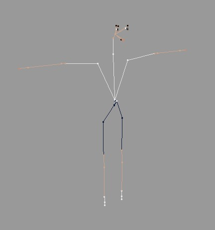

<!DOCTYPE html PUBLIC "-//W3C//DTD HTML 4.01 Transitional//EN">
<!-- saved from url=(0014)about:internet -->
<html>

	<head>
		<meta http-equiv="content-type" content="text/html;charset=utf-8">
		<meta name="generator" content="WICKIE">
		<title>视口：显示</title>
		<meta name="FORMATTER" content="wickie">
		<link href="../../files/wickie.css" type="text/css" rel="stylesheet" media="all">
		<script type="text/javascript" src="../../files/versionAppender.js"> </script>
		<script type="text/javascript" src="../../files/linkRewriter.js"> </script> 
		<!--PAGE_ID "3066"-->
		<!--VATER_ID "3065"-->
		<!--REIHENFOLGE "1"-->
		<!--TITLE "视口：显示"-->
		<!--APPS ""-->
		<!--TYP "GROUP"-->
	</head>

<body bgcolor="#e0e0e0" link="black" vlink="#2a2a2a">


<!--NO_SEARCH_START-->
<span class="link_back"><a href="43668.html" target="_self">CINEMA 4D</a></span> <span class="link_back"><a href="1001.html" target="_self">CINEMA 4D Prime</a></span> <span class="link_back"><a href="5426.html" target="_self">视图和视口</a></span> <span class="link_back"><a href="5852.html" target="_self">视图</a></span> <span class="link_back"><a href="DBASEDRAW.html" target="_self">视口</a></span>

<div class="in-lite-page in-prime-page in-visualize-page in-broadcast-page in-studio-page in-bodypaint3d-page ">  <div class="page_only_body">
<div class="page_only_apps">             Function available in CINEMA 4D Prime, Visualize, Broadcast, Studio & BodyPaint 3D  </div>
<span class="HL_atom"><a href="DBASEDRAW.html">视口</a> </span><p></p><a href="DBASEDRAW-BASEDRAW_GROUP_DISPLAY.html" target=""><span class="c4d_group_navi_self">显示</span></a> <a href="DBASEDRAW-BASEDRAW_GROUP_FILTER.html" target=""><span class="c4d_group_navi">滤镜</span></a> <a href="DBASEDRAW-BASEDRAW_GROUP_VIEW.html" target=""><span class="c4d_group_navi">视图</span></a> <a href="DBASEDRAW-BASEDRAW_GROUP_BACKGROUND.html" target=""><span class="c4d_group_navi">背景</span></a> <a href="DBASEDRAW-BASEDRAW_GROUP_HUD.html" target=""><span class="c4d_group_navi">HUD</span></a> <a href="DBASEDRAW-BASEDRAW_GROUP_STEREO.html" target=""><span class="c4d_group_navi">立体</span></a><!--NO_SEARCH_END--><p class="c4d_group"><span>显示</span></p><p></p>
<p>这些设置主要控制如何显视口中的活动或非活动对象。</p>
<p><a id="BASEDRAW_TITLE" name="BASEDRAW_TITLE"></a> <!--INDEX "8","标题","BASEDRAW_TITLE"--><span class="c4d_id">标题</span></p>
<p>你可以在这里改变视图的名称，这是在 HUD 中默认显示的名称。</p>
<p><a id="AKTIVESOBJEKT" name="AKTIVESOBJEKT"></a></p>
<p><!--INDEX "6","活动对象","BASEDRAW_GROUP_ACTIVEOBJECT"--><a id="BASEDRAW_GROUP_ACTIVEOBJECT" name="BASEDRAW_GROUP_ACTIVEOBJECT"></a><p class="c4d_subgroup">&nbsp;<span>活动对象</span> </p>
<p>你可以在这里设置视图中的对象如何显示，这些设置与显示菜单中的设置相对应。你可以对非活动对象进行不同的配置，从而只让相关的（即被选中的）对象以更好的品质显示，而其他的则以如线框形式显示。</p>
<p><a id="BASEDRAW_DATA_USE_LAYERCOLOR" name="BASEDRAW_DATA_USE_LAYERCOLOR"></a> <!--AM_JUMP "BASEDRAW_DATA_USE_LAYERCOLOR","BASEDRAW_GROUP_ACTIVEOBJECT","BASEDRAW_GROUP_DISPLAY"--><!--INDEX "8","使用层颜色","BASEDRAW_DATA_USE_LAYERCOLOR"--><span class="c4d_id">使用层颜色</span></p>
<p>分配到层的对象可以显示它所在层的颜色。</p>
<p><RELEASE_140 Selected objects or objects to be selected can be highlighted with an outline.></p>
<p><a id="BASEDRAW_DATA_OUTLINE" name="BASEDRAW_DATA_OUTLINE"></a> <!--AM_JUMP "BASEDRAW_DATA_OUTLINE","BASEDRAW_GROUP_ACTIVEOBJECT","BASEDRAW_GROUP_DISPLAY"--><!--INDEX "8","线框","BASEDRAW_DATA_OUTLINE"--><span class="c4d_id">线框</span></p>
<p><!-- ***** Vorschaublock ********** --><div id="036085_pre" style="display: block; width: 250px; float: left; height=1%;">	<a href="javascript:dummy();" onclick="change('036085_pre');change('036085');" style= "float: left;"></a>	<a href="javascript:dummy();" onclick="change('036085_pre');change('036085');">	       	     	</a>		<span class="caption"></span></div><div id="036085" style="display: none;z-index:0; width: 923px; float: left; ">		<a href="javascript:dummy();" onclick="change('036085_pre');change('036085');" style= "float: left;"></a>		<a href="javascript:dummy();" onclick="change('036085_pre');change('036085');"></a>		<span class="caption"></span></div><p> </p></p>
<p>从 CINEMA 4D R14 开始，选中的物体或要被选择的物体会被彩色线框表示出来，线框的宽度可以用<a href="DBASEDRAW-BASEDRAW_GROUP_VIEW.html#BASEDRAW_DATA_OUTLINE_WIDTH" target="_self"><span class="text_id">选择边尺寸</span></a>来进行设置。</p>
<p>你鼠标指向（未点击）的对象会被套上一个白色轮廓线，这取决于当前激活的工具或模式（在模型模式下的移动工具），这对交互式选择很有帮助，尤其是在使用<a href="5605.html#tweak" target="">Tweak</a>模式时。</p>
<p>被选择物体的子对象会有一个较细的轮廓线。</p>
<p>轮廓线能全局禁用（<nobr><span class="menu">滤镜</span></nobr>菜单的<span class="command">对象高亮</span>命令能只在选择的视图中禁用）。</p>
<p><p><div class="hint"><span class="HL_hint">提示：<br></span>注意，轮廓线只会在一些激活了<a href="45030.html#PLUGIN_CMD_17423" target="_self"><nobr><span class="text_command">增强的 OpenGL</span></nobr></a> 功能的系统（OpenGL 2.1 及以上版本）上有效。</div></p>
<p></RELEASE_140></p>
<p><a id="BASEDRAW_DATA_SDISPLAYACTIVE" name="BASEDRAW_DATA_SDISPLAYACTIVE"></a> <!--AM_JUMP "BASEDRAW_DATA_SDISPLAYACTIVE","BASEDRAW_GROUP_ACTIVEOBJECT","BASEDRAW_GROUP_DISPLAY"--><!--INDEX "8","着色","BASEDRAW_DATA_SDISPLAYACTIVE"--><span class="c4d_id">着色</span></p>
<p>这些设置定义活动对象的显示模式。</p>
<p><a id="BASEDRAW_SDISPLAY_GOURAUD" name="BASEDRAW_SDISPLAY_GOURAUD"></a><!--INDEX "10","光影着色","BASEDRAW_SDISPLAY_GOURAUD"--><span class="c4d_id_cycle">光影着色</span><br><a id="BASEDRAW_SDISPLAY_GOURAUD_WIRE" name="BASEDRAW_SDISPLAY_GOURAUD_WIRE"></a><!--INDEX "10","光影着色(线条)","BASEDRAW_SDISPLAY_GOURAUD_WIRE"--><span class="c4d_id_cycle">光影着色(线条)</span></p>
<p><!-- ***** Vorschaublock ********** --><div id="004802_pre" style="display: block; width: 200px; float: left; height=1%;">	<a href="javascript:dummy();" onclick="change('004802_pre');change('004802');" style= "float: left;"></a>	<a href="javascript:dummy();" onclick="change('004802_pre');change('004802');">	       	     	</a>		<span class="caption"></span></div><div id="004802" style="display: none;z-index:0; width: 653px; float: left; ">		<a href="javascript:dummy();" onclick="change('004802_pre');change('004802');" style= "float: left;"></a>		<a href="javascript:dummy();" onclick="change('004802_pre');change('004802');"></a>		<span class="caption"></span></div><p> </p></p>
<p>是视口最好的显示质量。所有对象会平滑着色，光源也会进入计算。重绘率主要受到处理器和显卡速度的影响——你的 CPU 和显卡速度越快，场景重绘的速度越快。如果显示刷新太慢，请尝试减小视口的尺寸。</p>
<p>在这个模式下你能通过在显示菜单中选择线框或等参线为<span class="command">光影着色</span>添加线框或等参线。</p>
<p><a id="BASEDRAW_SDISPLAY_QUICK" name="BASEDRAW_SDISPLAY_QUICK"></a><!--INDEX "10","快速着色","BASEDRAW_SDISPLAY_QUICK"--><span class="c4d_id_cycle">快速着色</span><br><a id="BASEDRAW_SDISPLAY_QUICK_WIRE" name="BASEDRAW_SDISPLAY_QUICK_WIRE"></a><!--INDEX "10","快速着色(线条)","BASEDRAW_SDISPLAY_QUICK_WIRE"--><span class="c4d_id_cycle">快速着色(线条)</span></p>
<p><!-- ***** Vorschaublock ********** --><div id="004803_pre" style="display: block; width: 200px; float: left; height=1%;">	<a href="javascript:dummy();" onclick="change('004803_pre');change('004803');" style= "float: left;"></a>	<a href="javascript:dummy();" onclick="change('004803_pre');change('004803');">	       	     	</a>		<span class="caption"></span></div><div id="004803" style="display: none;z-index:0; width: 653px; float: left; ">		<a href="javascript:dummy();" onclick="change('004803_pre');change('004803');" style= "float: left;"></a>		<a href="javascript:dummy();" onclick="change('004803_pre');change('004803');"></a>		<span class="caption"></span></div><p> </p></p>
<p>这种模式与光影着色类似，区别是它会使用自动光照来计算着色而不是场景的光照，因此这种模式有更高的重绘率。</p>
<p>在这种模式下你能通过在显示菜单中选择线框或等参线为<span class="command">快速着色</span>添加线框或等参线。</p>
<p><a id="BASEDRAW_SDISPLAY_FLAT" name="BASEDRAW_SDISPLAY_FLAT"></a><!--INDEX "10","常量着色","BASEDRAW_SDISPLAY_FLAT"--><span class="c4d_id_cycle">常量着色</span><br><a id="BASEDRAW_SDISPLAY_FLAT_WIRE" name="BASEDRAW_SDISPLAY_FLAT_WIRE"></a><!--INDEX "10","常量着色(线条)","BASEDRAW_SDISPLAY_FLAT_WIRE"--><span class="c4d_id_cycle">常量着色(线条)</span></p>
<p><!-- ***** Vorschaublock ********** --><div id="004804_pre" style="display: block; width: 200px; float: left; height=1%;">	<a href="javascript:dummy();" onclick="change('004804_pre');change('004804');" style= "float: left;"></a>	<a href="javascript:dummy();" onclick="change('004804_pre');change('004804');">	       	     	</a>		<span class="caption"></span></div><div id="004804" style="display: none;z-index:0; width: 653px; float: left; ">		<a href="javascript:dummy();" onclick="change('004804_pre');change('004804');" style= "float: left;"></a>		<a href="javascript:dummy();" onclick="change('004804_pre');change('004804');"></a>		<span class="caption"></span></div><p> </p></p>
<p>这种模式可以只显示<span class="command">常量着色</span>或带有线框的<span class="command">常量着色</span>。</p>
<p><a id="BASEDRAW_SDISPLAY_HIDDENLINE" name="BASEDRAW_SDISPLAY_HIDDENLINE"></a><!--INDEX "10","隐藏线条","BASEDRAW_SDISPLAY_HIDDENLINE"--><span class="c4d_id_cycle">隐藏线条</span></p>
<p><!-- ***** Vorschaublock ********** --><div id="004805_pre" style="display: block; width: 200px; float: left; height=1%;">	<a href="javascript:dummy();" onclick="change('004805_pre');change('004805');" style= "float: left;"></a>	<a href="javascript:dummy();" onclick="change('004805_pre');change('004805');">	       	     	</a>		<span class="caption"></span></div><div id="004805" style="display: none;z-index:0; width: 653px; float: left; ">		<a href="javascript:dummy();" onclick="change('004805_pre');change('004805');" style= "float: left;"></a>		<a href="javascript:dummy();" onclick="change('004805_pre');change('004805');"></a>		<span class="caption"></span></div><p> </p></p>
<p>与线条模式相比，隐藏的<span class="command">线条</span>不会被显示。</p>
<p><a id="BASEDRAW_SDISPLAY_NOSHADING" name="BASEDRAW_SDISPLAY_NOSHADING"></a><!--INDEX "10","线条","BASEDRAW_SDISPLAY_NOSHADING"--><span class="c4d_id_cycle">线条</span></p>
<p><!-- ***** Vorschaublock ********** --><div id="004806_pre" style="display: block; width: 200px; float: left; height=1%;">	<a href="javascript:dummy();" onclick="change('004806_pre');change('004806');" style= "float: left;"></a>	<a href="javascript:dummy();" onclick="change('004806_pre');change('004806');">	       	     	</a>		<span class="caption"></span></div><div id="004806" style="display: none;z-index:0; width: 653px; float: left; ">		<a href="javascript:dummy();" onclick="change('004806_pre');change('004806');" style= "float: left;"></a>		<a href="javascript:dummy();" onclick="change('004806_pre');change('004806');"></a>		<span class="caption"></span></div><p> </p></p>
<p><span class="command">线条</span>模式会显示包括隐藏线条在内的全部多边形网格。</p>
<p><a id="BASEDRAW_DATA_WDISPLAYACTIVE" name="BASEDRAW_DATA_WDISPLAYACTIVE"></a> <!--AM_JUMP "BASEDRAW_DATA_WDISPLAYACTIVE","BASEDRAW_GROUP_ACTIVEOBJECT","BASEDRAW_GROUP_DISPLAY"--><!--INDEX "8","线框","BASEDRAW_DATA_WDISPLAYACTIVE"--><span class="c4d_id">线框</span></p>
<p><a id="BASEDRAW_WDISPLAY_WIREFRAME" name="BASEDRAW_WDISPLAY_WIREFRAME"></a><!--INDEX "10","线框","BASEDRAW_WDISPLAY_WIREFRAME"--><span class="c4d_id_cycle">线框</span></p>
<p><!-- ***** Vorschaublock ********** --><div id="004807_pre" style="display: block; width: 200px; float: left; height=1%;">	<a href="javascript:dummy();" onclick="change('004807_pre');change('004807');" style= "float: left;"></a>	<a href="javascript:dummy();" onclick="change('004807_pre');change('004807');">	       	     	</a>		<span class="caption"></span></div><div id="004807" style="display: none;z-index:0; width: 653px; float: left; ">		<a href="javascript:dummy();" onclick="change('004807_pre');change('004807');" style= "float: left;"></a>		<a href="javascript:dummy();" onclick="change('004807_pre');change('004807');"></a>		<span class="caption"></span></div><p> </p></p>
<p>在与如光影着色等允许使用线框的模式一起使用时，线框会在对象上显示线条。</p>
<p><a id="BASEDRAW_WDISPLAY_ISOPARMS" name="BASEDRAW_WDISPLAY_ISOPARMS"></a><!--INDEX "10","等参线","BASEDRAW_WDISPLAY_ISOPARMS"--><span class="c4d_id_cycle">等参线</span></p>
<p><!-- ***** Vorschaublock ********** --><div id="004808_pre" style="display: block; width: 200px; float: left; height=1%;">	<a href="javascript:dummy();" onclick="change('004808_pre');change('004808');" style= "float: left;"></a>	<a href="javascript:dummy();" onclick="change('004808_pre');change('004808');">	       	     	</a>		<span class="caption"></span></div><div id="004808" style="display: none;z-index:0; width: 653px; float: left; ">		<a href="javascript:dummy();" onclick="change('004808_pre');change('004808');" style= "float: left;"></a>		<a href="javascript:dummy();" onclick="change('004808_pre');change('004808');"></a>		<span class="caption"></span></div><p> </p></p>
<p>这个模式会在如生成器对象等使用等参线的对象上显示等参线，其他如多边形对象会显示线框。这个模式只有与支持它的模式（如光影着色(线条)）一起使用时才会生效。</p>
<p><a id="BASEDRAW_WDISPLAY_BOX" name="BASEDRAW_WDISPLAY_BOX"></a><!--INDEX "10","方形","BASEDRAW_WDISPLAY_BOX"--><span class="c4d_id_cycle">方形</span></p>
<p><!-- ***** Vorschaublock ********** --><div id="004809_pre" style="display: block; width: 200px; float: left; height=1%;">	<a href="javascript:dummy();" onclick="change('004809_pre');change('004809');" style= "float: left;"></a>	<a href="javascript:dummy();" onclick="change('004809_pre');change('004809');">	       	     	</a>		<span class="caption"></span></div><div id="004809" style="display: none;z-index:0; width: 650px; float: left; ">		<a href="javascript:dummy();" onclick="change('004809_pre');change('004809');" style= "float: left;"></a>		<a href="javascript:dummy();" onclick="change('004809_pre');change('004809');"></a>		<span class="caption"></span></div><p> </p></p>
<p>这个模式会将每个对象显示为立方体，每个立方体的坐标与它表示的对象相同。方形是可用的显示模式中第二快的，在需求极端的场景下会很有用。</p>
<p><a id="BASEDRAW_WDISPLAY_SKELETON" name="BASEDRAW_WDISPLAY_SKELETON"></a><!--INDEX "10","骨架","BASEDRAW_WDISPLAY_SKELETON"--><span class="c4d_id_cycle">骨架</span></p>
<p><!-- ***** Vorschaublock ********** --><div id="004810_pre" style="display: block; width: 200px; float: left; height=1%;">	<a href="javascript:dummy();" onclick="change('004810_pre');change('004810');" style= "float: left;"></a>	<a href="javascript:dummy();" onclick="change('004810_pre');change('004810');">	       	     	</a>		<span class="caption"></span></div><div id="004810" style="display: none;z-index:0; width: 432px; float: left; ">		<a href="javascript:dummy();" onclick="change('004810_pre');change('004810');" style= "float: left;"></a>		<a href="javascript:dummy();" onclick="change('004810_pre');change('004810');"></a>	<span class="caption"></span></div><p> </p></p>
<p>这是所有显示模式中最快的，它只表示层级结构。每个原始对象显示为一个小点，且小点根据层级结构进行连接。这个模式对角色动画很有用。它不仅非常快，而且会移除所有无关的线条来表示其骨架。</p>
<p><a id="BASEDRAW_DATA_USEPROPERTIESACTIVE" name="BASEDRAW_DATA_USEPROPERTIESACTIVE"></a> <!--AM_JUMP "BASEDRAW_DATA_USEPROPERTIESACTIVE","BASEDRAW_GROUP_ACTIVEOBJECT","BASEDRAW_GROUP_DISPLAY"--><!--INDEX "8","显示标签","BASEDRAW_DATA_USEPROPERTIESACTIVE"--><span class="c4d_id">显示标签</span></p>
<p>如果勾选了这个选项，对象会以它们的显示标签中定义的显示模式（如果有的话）。没有显示标签的对象会继续使用视口的显示着色模式。</p>
<p><a id="BASEDRAW_DATA_SHOWNORMALS" name="BASEDRAW_DATA_SHOWNORMALS"></a> <!--AM_JUMP "BASEDRAW_DATA_SHOWNORMALS","BASEDRAW_GROUP_ACTIVEOBJECT","BASEDRAW_GROUP_DISPLAY"--><!--INDEX "8","法线","BASEDRAW_DATA_SHOWNORMALS"--><span class="c4d_id">法线</span></p>
<p>如果勾选了这个选项，视口中被选中的多边形会显示表面的法线，每条法线会显示为多边形表面的一小段辅助线。按照惯例，法线的方向表示了多边形的方向。在<span class="command">自定义命令...</span>中你会找到<span class="command">法线</span>命令。如果你为这个命令配置了一个快捷键，就可以用快捷键开关法线的显示。</p>
<p>例如，背面忽略会检查每条法线的方向来决定它的表面是否该被绘制——如果法线指向远离摄像机，则表面不会被绘制（表面会被认为是背朝摄像机，就像法线一样）。 </p>
<p><a id="BASEDRAW_DATA_SELECTED_NORMALS" name="BASEDRAW_DATA_SELECTED_NORMALS"></a> <!--AM_JUMP "BASEDRAW_DATA_SELECTED_NORMALS","BASEDRAW_GROUP_ACTIVEOBJECT","BASEDRAW_GROUP_DISPLAY"--><!--INDEX "8","仅选取","BASEDRAW_DATA_SELECTED_NORMALS"--><span class="c4d_id">仅选取</span></p>
<p>不勾选这个选项会显示所选对象的所有法线。</p>
<p><a id="BASEDRAW_DATA_SHOWPATH" name="BASEDRAW_DATA_SHOWPATH"></a> <!--AM_JUMP "BASEDRAW_DATA_SHOWPATH","BASEDRAW_GROUP_ACTIVEOBJECT","BASEDRAW_GROUP_DISPLAY"--><!--INDEX "8","动画路径","BASEDRAW_DATA_SHOWPATH"--><span class="c4d_id">动画路径</span></p>
<p>勾选这个选项会在视口中以一条样条曲线显示活动对象的动画路径。可以像一条样条曲线一样编辑动画路径，即拖动曲线上的点到新位置。切线是无法被编辑的。用这种方法编辑动画路径允许你不通过编辑关键帧来调整它。</p>
<p><RELEASE_130 Assigning an animation path according to the layer color.></p>
<p><!-- ***** Vorschaublock ********** --><div id="031528_pre" style="display: block; width: 250px; float: left; height=1%;">	<a href="javascript:dummy();" onclick="change('031528_pre');change('031528');" style= "float: left;"></a>	<a href="javascript:dummy();" onclick="change('031528_pre');change('031528');">	       	     	</a>		<span class="caption"></span></div><div id="031528" style="display: none;z-index:0; width: 732px; float: left; ">		<a href="javascript:dummy();" onclick="change('031528_pre');change('031528');" style= "float: left;"></a>		<a href="javascript:dummy();" onclick="change('031528_pre');change('031528');"></a>		<span class="caption"></span></div><p> </p></p>
<p>动画路径的颜色取自于动画轨迹的时间线层颜色，这让动画路径有各自的颜色时便于相互区别。</p>
<p></RELEASE_130></p>
<p><RELEASE_140></p>
<p>现在视口中的动画路径长度与预览的范围直接相关，也就是说，如果预览范围较短，相应地也会显示较短的动画路径。拖动预览范围到整个项目长度来显示完整的动画路径。（在 PowerSlider 中按 <nobr><span class="key">Ctrl</span></nobr> + a）。</p>
<p></RELEASE_140></p>
<p><a id="BASEDRAW_DATA_XRAY" name="BASEDRAW_DATA_XRAY"></a> <!--AM_JUMP "BASEDRAW_DATA_XRAY","BASEDRAW_GROUP_ACTIVEOBJECT","BASEDRAW_GROUP_DISPLAY"--><!--INDEX "8","透显","BASEDRAW_DATA_XRAY"--><span class="c4d_id">透显</span></p>
<p>要进入透显模式请勾选这个选项。如果活动对象是多边形对象，它会变成半透明，这样你就可以看见它所有的点和边了。</p>
<p><a id="BASEDRAW_DATA_SDSEDIT" name="BASEDRAW_DATA_SDSEDIT"></a> <!--AM_JUMP "BASEDRAW_DATA_SDSEDIT","BASEDRAW_GROUP_ACTIVEOBJECT","BASEDRAW_GROUP_DISPLAY"--><!--INDEX "8","等参线编辑模式","BASEDRAW_DATA_SDSEDIT"--><span class="c4d_id">等参线编辑模式</span></p>
<p><!-- ***** Vorschaublock ********** --><div id="004773_pre" style="display: block; width: 200px; float: left; height=1%;">	<a href="javascript:dummy();" onclick="change('004773_pre');change('004773');" style= "float: left;"></a>	<a href="javascript:dummy();" onclick="change('004773_pre');change('004773');">	       	     	</a>		<span class="caption">等参线编辑模式打开时（上）和关闭时（下）。</span></div><div id="004773" style="display: none;z-index:0; width: 622px; float: left; ">		<a href="javascript:dummy();" onclick="change('004773_pre');change('004773');" style= "float: left;"></a>		<a href="javascript:dummy();" onclick="change('004773_pre');change('004773');"></a>		<span class="caption">等参线编辑模式打开时（上）和关闭时（下）。</span></div><p> </p></p>
<p>如果勾选了这个选项，细分曲面框架对象所有元素（即它的点、边、多边形）会显示在平滑的细分曲面对象表面。这时你可以在平滑的对象上直接选择这些元素，虽然可能看起来你在选择对象的平滑部分，但实际上你选择的是框架对象的元素！</p>
<p><a id="BASEDRAW_DATA_DEFORMEDEDIT" name="BASEDRAW_DATA_DEFORMEDEDIT"></a> <!--AM_JUMP "BASEDRAW_DATA_DEFORMEDEDIT","BASEDRAW_GROUP_ACTIVEOBJECT","BASEDRAW_GROUP_DISPLAY"--><!--INDEX "8","变形器编辑模式","BASEDRAW_DATA_DEFORMEDEDIT"--><span class="c4d_id">变形器编辑模式</span></p>
<p><!-- ***** Vorschaublock ********** --><div id="004774_pre" style="display: block; width: 300px; float: left; height=1%;">	<a href="javascript:dummy();" onclick="change('004774_pre');change('004774');" style= "float: left;"></a>	<a href="javascript:dummy();" onclick="change('004774_pre');change('004774');">	       	     	</a>		<span class="caption">一个添加了膨胀变形器的立方体在变形器编辑模式关闭时（左）和打开时（右）。</span></div><div id="004774" style="display: none;z-index:0; width: 753px; float: left; ">		<a href="javascript:dummy();" onclick="change('004774_pre');change('004774');" style= "float: left;"></a>		<a href="javascript:dummy();" onclick="change('004774_pre');change('004774');"></a>		<span class="caption">一个添加了膨胀变形器的立方体在变形器编辑模式关闭时（左）和打开时（右）。</span></div><p> </p></p>
<p>如果当你切换到点、边或多边形模式来编辑一个添加了变形器效果的多边形对象时，会发现它变回了未变形的状态，不便于操作。现在 CINEMA 4D 允许你在它们仍然在变形的状态下被编辑，只需要打开变形器编辑模式。</p>
<p><p><div class="hint"><span class="HL_hint"></span>有一些工具不支持变形器编辑模式，当你使用这些工具时，多边形对象会临时变回未变形的状态。</div></p>
<p><a id="BASEDRAW_DATA_EDGE_POINTS" name="BASEDRAW_DATA_EDGE_POINTS"></a> <!--AM_JUMP "BASEDRAW_DATA_EDGE_POINTS","BASEDRAW_GROUP_ACTIVEOBJECT","BASEDRAW_GROUP_DISPLAY"--><!--INDEX "8","边缘点","BASEDRAW_DATA_EDGE_POINTS"--><span class="c4d_id">边缘点</span></p>
<p>如果你想在边模式下显示对象的点，可以勾选这个选项。</p>
<p><a id="BASEDRAW_DATA_ROTATION_BANDS" name="BASEDRAW_DATA_ROTATION_BANDS"></a> <!--AM_JUMP "BASEDRAW_DATA_ROTATION_BANDS","BASEDRAW_GROUP_ACTIVEOBJECT","BASEDRAW_GROUP_DISPLAY"--><!--INDEX "8","旋转带","BASEDRAW_DATA_ROTATION_BANDS"--><span class="c4d_id">旋转带</span></p>
<p><!-- ***** Vorschaublock ********** --><div id="004775_pre" style="display: block; width: 300px; float: left; height=1%;">	<a href="javascript:dummy();" onclick="change('004775_pre');change('004775');" style= "float: left;"></a>	<a href="javascript:dummy();" onclick="change('004775_pre');change('004775');">	       	     	</a>		<span class="caption">旋转带在打开时（左）和关闭时（右）。</span></div><div id="004775" style="display: none;z-index:0; width: 622px; float: left; ">		<a href="javascript:dummy();" onclick="change('004775_pre');change('004775');" style= "float: left;"></a>		<a href="javascript:dummy();" onclick="change('004775_pre');change('004775');"></a>		<span class="caption">旋转带在打开时（左）和关闭时（右）。</span></div><p> </p></p>
<p>你可以在这里选择在使用旋转工具时，是否显示选取对象的旋转带和球形手柄。</p>
<p><a id="BASEDRAW_DATA_BOUNDINGBOXSELECTION" name="BASEDRAW_DATA_BOUNDINGBOXSELECTION"></a> <!--AM_JUMP "BASEDRAW_DATA_BOUNDINGBOXSELECTION","BASEDRAW_GROUP_ACTIVEOBJECT","BASEDRAW_GROUP_DISPLAY"--><!--INDEX "8","所选范围框","BASEDRAW_DATA_BOUNDINGBOXSELECTION"--><span class="c4d_id">所选范围框</span><br><a id="BASEDRAW_DATA_BOUNDINGBOXSELECTION_CHILDREN" name="BASEDRAW_DATA_BOUNDINGBOXSELECTION_CHILDREN"></a> <!--AM_JUMP "BASEDRAW_DATA_BOUNDINGBOXSELECTION_CHILDREN","BASEDRAW_GROUP_ACTIVEOBJECT","BASEDRAW_GROUP_DISPLAY"--><!--INDEX "8","包括子级","BASEDRAW_DATA_BOUNDINGBOXSELECTION_CHILDREN"--><span class="c4d_id">包括子级</span><br><a id="BASEDRAW_DATA_WIREFRAMESELECTION" name="BASEDRAW_DATA_WIREFRAMESELECTION"></a> <!--AM_JUMP "BASEDRAW_DATA_WIREFRAMESELECTION","BASEDRAW_GROUP_ACTIVEOBJECT","BASEDRAW_GROUP_DISPLAY"--><!--INDEX "8","所选线框","BASEDRAW_DATA_WIREFRAMESELECTION"--><span class="c4d_id">所选线框</span><br><a id="BASEDRAW_DATA_WIREFRAMESELECTION_CHILDREN" name="BASEDRAW_DATA_WIREFRAMESELECTION_CHILDREN"></a> <!--AM_JUMP "BASEDRAW_DATA_WIREFRAMESELECTION_CHILDREN","BASEDRAW_GROUP_ACTIVEOBJECT","BASEDRAW_GROUP_DISPLAY"--><!--INDEX "8","包括子级","BASEDRAW_DATA_WIREFRAMESELECTION_CHILDREN"--><span class="c4d_id">包括子级</span></p>
<p>你可以在这里设置活动对象和它们的子级在视口中如何显示：线框、范围框或者两者皆有。</p>
<p><!--INDEX "6","非活动对象","BASEDRAW_GROUP_INACTIVEOBJECT"--><a id="BASEDRAW_GROUP_INACTIVEOBJECT" name="BASEDRAW_GROUP_INACTIVEOBJECT"></a><p class="c4d_subgroup">&nbsp;<span>非活动对象</span> </p>
<p><a id="BASEDRAW_DATA_DISPLAYINACTIVE_ENABLED" name="BASEDRAW_DATA_DISPLAYINACTIVE_ENABLED"></a> <!--AM_JUMP "BASEDRAW_DATA_DISPLAYINACTIVE_ENABLED","BASEDRAW_GROUP_INACTIVEOBJECT","BASEDRAW_GROUP_DISPLAY"--><!--INDEX "8","单独设置","BASEDRAW_DATA_DISPLAYINACTIVE_ENABLED"--><span class="c4d_id">单独设置</span></p>
<p>如果你希望非活动对象以与视口显示菜单中设置的模式不同的方式显示，可以勾选这个选项。</p>
<p><a id="BASEDRAW_DATA_SDISPLAYINACTIVE" name="BASEDRAW_DATA_SDISPLAYINACTIVE"></a> <!--AM_JUMP "BASEDRAW_DATA_SDISPLAYINACTIVE","BASEDRAW_GROUP_INACTIVEOBJECT","BASEDRAW_GROUP_DISPLAY"--><!--INDEX "8","着色","BASEDRAW_DATA_SDISPLAYINACTIVE"--><span class="c4d_id">着色</span><br><a id="BASEDRAW_DATA_WDISPLAYINACTIVE" name="BASEDRAW_DATA_WDISPLAYINACTIVE"></a> <!--AM_JUMP "BASEDRAW_DATA_WDISPLAYINACTIVE","BASEDRAW_GROUP_INACTIVEOBJECT","BASEDRAW_GROUP_DISPLAY"--><!--INDEX "8","线框","BASEDRAW_DATA_WDISPLAYINACTIVE"--><span class="c4d_id">线框</span></p>
<p>这些设置定义了非活动对象的显示模式。</p>
<p><a id="BASEDRAW_DATA_USEPROPERTIESINACTIVE" name="BASEDRAW_DATA_USEPROPERTIESINACTIVE"></a> <!--AM_JUMP "BASEDRAW_DATA_USEPROPERTIESINACTIVE","BASEDRAW_GROUP_INACTIVEOBJECT","BASEDRAW_GROUP_DISPLAY"--><!--INDEX "8","显示标签","BASEDRAW_DATA_USEPROPERTIESINACTIVE"--><span class="c4d_id">显示标签</span></p>
<p>如果勾选了这个选项，非活动对象会使用它们显示标签中的显示模式（如果有的话），来替代视口设置中定义的模式。</p>
<p>

</p>
  </div>  </div>
</body>

</html>